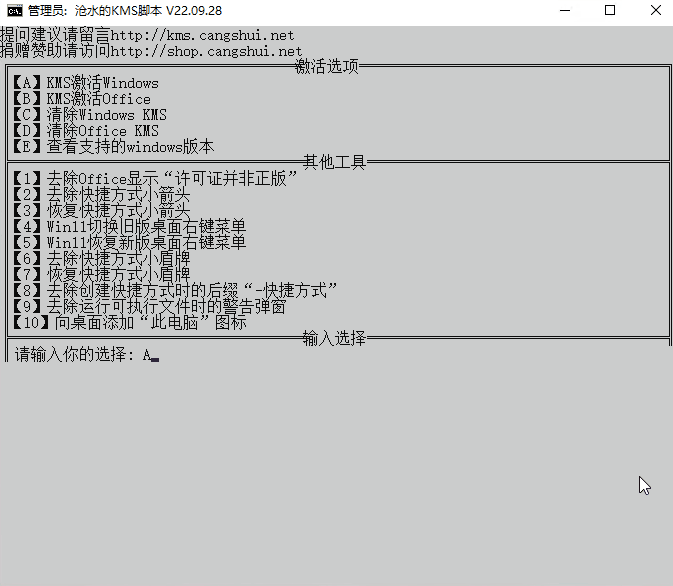

Overview
What This Tool Is For
This tool is used for activating Windows and Microsoft Office. The local download below is hosted from your own server so staff can still access it if the original website is unavailable.
Downloads
Download Links
Use the local copy first. The original source link is also included for reference.
./KMS-Cangshui.net.bat

Example interface of the KMS activation tool. Staff can use this as a quick visual reference before running the batch file.